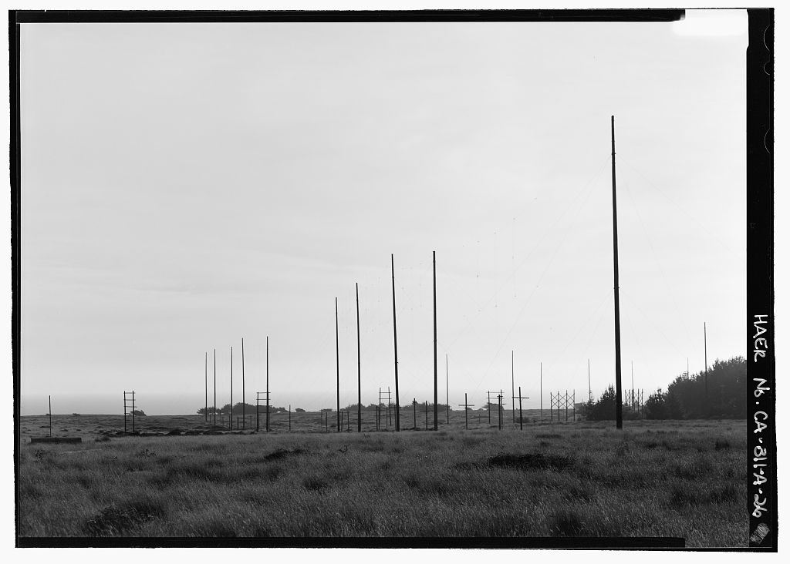

The Open Network
Instrument: the hearing transcript
Napster launched on June 1, 1999 and was sued by the RIAA on December 6. Its measured use peaked at 26.4 million people in February 2001 (the "80 million" is registered accounts, undated); an injunction stopped the trading on March 5, 2001, the network went dark on July 11, and the company paid $26 million to rights-holders on its way into bankruptcy. For two years the distribution of recorded music left the label building and nobody held the deed.1
FactThe Black artists in the record stood on both sides. Dr. Dre, a producer-owner through Aftermath, filed his own suit against Napster on April 26, 2000, thirteen days after Metallica.2 Public Enemy had left Def Jam and released There's a Poison Goin' On online through Atomic Pop in 1999 before any physical copy.3 Prince opened the NPG Music Club on February 14, 2001: $7.77 a month or $99 a year, about 400,000 members by the time it closed on July 4, 2006.6 InferenceDre litigated as a rights-holder; Chuck D testified as a distributor; Prince sold the deed direct. Three answers to one question in the same eighteen months.
Two rooms in Washington
Two hearings on Napster, seven weeks apart. One had a Black artist in the witness chair. Switch rooms.
The direct deed
Prince's club against a label royalty. Set the membership and the price; the record gives the ceiling.
"Artists control and own their own destiny."Chuck D, as founder of Rapstation.com, to the House Small Business Committee, May 24, 2000 · T1, GovInfo
FactThe Senate Judiciary Committee's Napster hearing on July 11, 2000 heard Lars Ulrich, Napster's Hank Barry, MP3.com's Michael Robertson and Roger McGuinn. No Black artist testified.5 InferenceThe hearing that shaped the public story had the rock drummer; the one that had the Black distributor was about small business. The frame was set in the room the press covered.